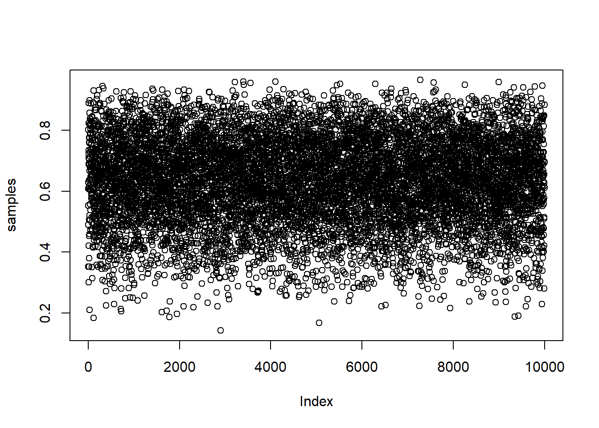
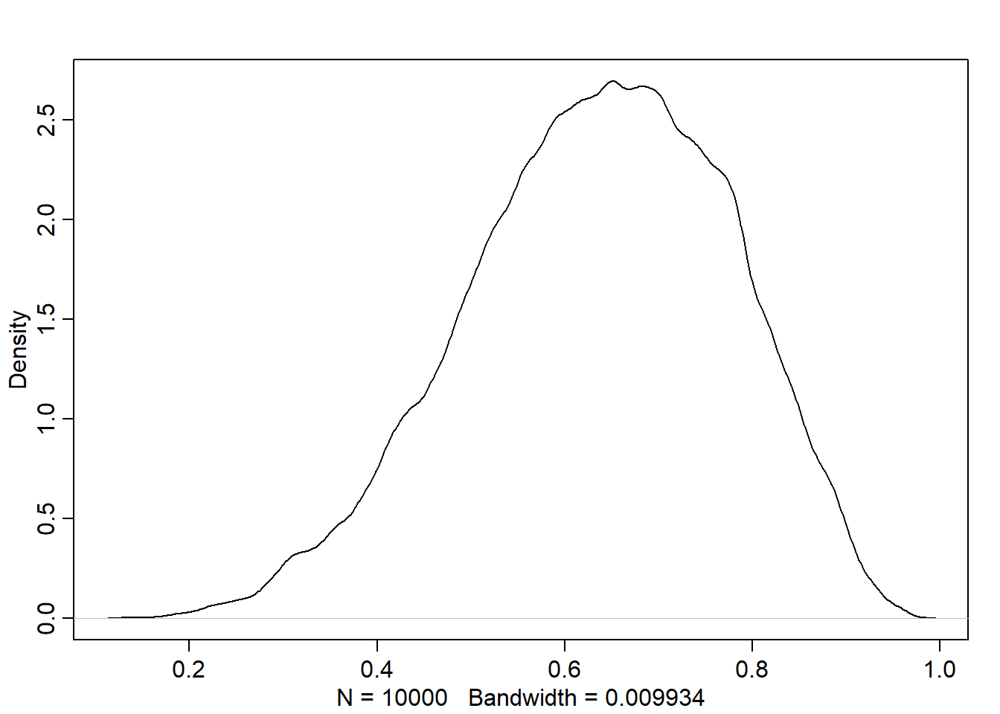
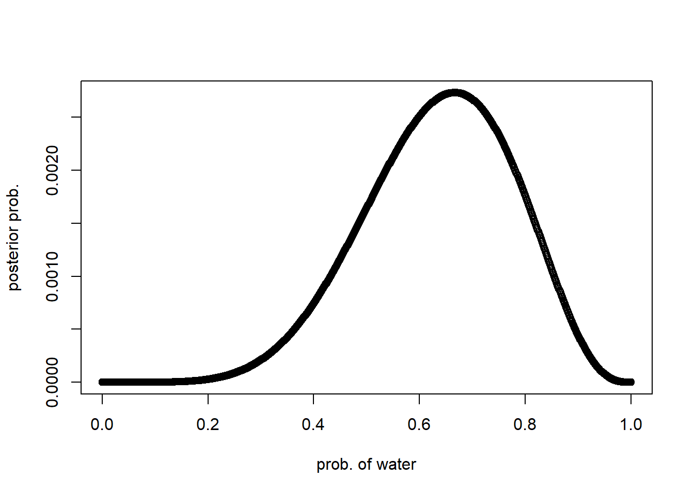
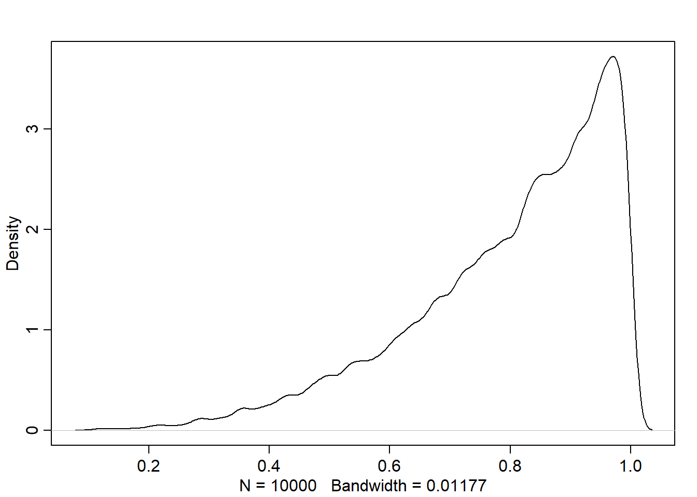
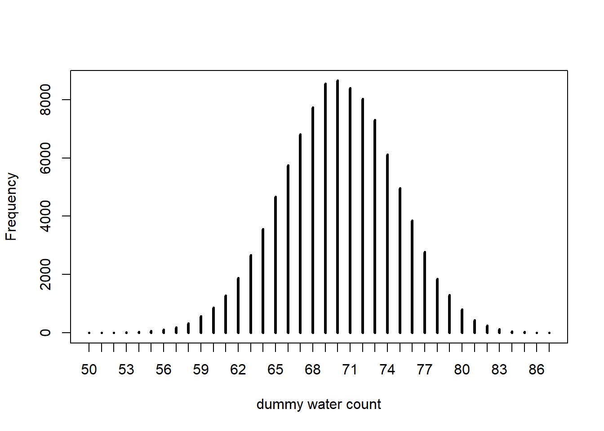

3. Sampling the Imaginary
Instead of relying on calculus to compute the posterior, we can use the sampling method. This chapter is about:
How to draw a sample
Summarizing the posterior using the sample
Boundaries
Probability mass
Point Estimate
Simulation using the sample
Sampling from a grid-approximate posterior
Below is the code for computing the posterior for the globe tossing model using grid approximation from chapter 2
p_grid <- seq(from=0, to=1, length.out=1000)
prior <- rep(1, 1000)
likelihood <- dbinom(6, size=9, prob=p_grid)
posterior <- likelihood * prior
posterior <- posterior / sum(posterior)Now, to draw a 10,000 samples from the posterior, we do this
The resulting samples are shown in this plot:

And the following is density estimate computed from these samples:

Comparing with the density of the posterior computed via grid approxinmation, we found that it is very similar though it isn’t identical:

Sampling to summarize
We prepared the model in the previous section. Now, we cam use it to summarize and interpret the posterior distribution. This is done by asking the model quesions about the following:
Intervals of defined boundaries
What is the probability (i.e. posterior probability) that the proportion of water is less than 0.5?
- Using grid approx:
## [1] 0.1718746- Using samples from posterior
## [1] 0.1738We can see that the results are very close to each other.
How much does posterior probability lie between 0.5 and 0.75?
## [1] 0.6044This means that about 60% of the posterior probability lies between 0.5 and 0.75.
Intervals of defined mass
Compatibility Interval
It is usually called:
Confidence Interval in Frequentist stats
Credible Interval in Bayesian stats
However, the author calls it Compatibility Interval because:
It indicates a range of parameter values compatible with the model and data.
He doesn’t use the “confidence” term because the model, data, and interval may not inspire confidence
What is the boundaries of parameter values (i.e. possible proportions of water) that holds the lower 80% posterior probability?
## 80%
## 0.7597598The output 0.76 represents the stop point of the interval. So, the interval or parameters [0, 0.76] holds 80% of the posterior probability, i.e. the 80th percentile lies in it.
The boundaries of the middle 80% posterior probability
{r} quantile(samples, c(0.1, 0.9))}
Percentile Intervals (PI)
Assign equal probability mass to each tail.
Common in scientific literature
Good for summarizing the shape of distribution as long as it is not too asymmetrical
p_grid <- seq(from=0, to=1, length.out=1000)
prior <- rep(1, 1000)
# observing 3 waters in 3 tosses
likelihood <- dbinom(3, size=3, prob=p_grid)
posterior <- likelihood * prior
posterior <- posterior / sum(posterior)
samples <- sample(p_grid, size=1e4, replace=TRUE, prob=posterior)
dens(samples)
## 25% 75%
## 0.7037037 0.9319319The last line compute the PI assigning 25% of the probability mass to each end of the interval.
Highest Posterior Density Interval (HPDI)
HPDI: the narrowest interval containing the specified probability mass. It can be computed using this function with (prob=0.5) as probability mass:
## |0.5 0.5|
## 0.8368368 0.9979980This means that the interval between the parameter values (i.e. proportion of water in our case) 0.56 and 0.75 has the highest posterior probability
Notes:
Most of the time, PI and HPDI are very similar except for the skewed distributions. It doesn’t matter which type of interval to use in bell shape curves.
If choice of interval type makes a big difference, then we shouldn’t be using them to summarize the posterior. PLOT THE ENTIRE POSTERIOR INSTEAD!
Point Estimates
In Bayesian stats, parameter estimate = the entire posterior distribution != single number = function:
Parameter value -> Posterior distribution (function) -> Plausibility value
Why? Because this way we avoid discarding information about uncertainty in the entire posterior distribution.
However, what if we want to produce a single point estimate to describe the posterior? Here are some common choices for doing that. Note that using single parameter value for making inference/prediction leads to overconfidence, so make sure to use the posterior.
Maximum a Posteriori Estimate (MAP)
From the grid approximation:
## [1] 1From the sample (it’s called the mode or MAP):
## [1] 0.9728613Loss Function
Loss function is helpful to decide a single point estimate, here is how we do so:
First, we must pick a loss function suitable to the problem.
Then, we find the value that minimize the loss to use it as a single point estimate, i.e. the optimal point estimate
Common loss functions:
Absolute loss \(| decision - true \space value |\) -> median of the posterior is the optimal point estimate
Quadratic loss \((decision - true \space value)^2\) -> mean of the posterior is the optimal point estimate
Note: when the posterior distribution is symmetrical and normal looking = then the median and mean converge to the same point (i.e. it doesn’t matter which loss or point estimate to pick)
Example:
- Median
## [1] 0.8388388- The expected loss when we decide that the proportion of water
p=0.5= sum of the weighted average loss:
## [1] 0.3128752- We can find the loss for every possible decision/value/proportion of water in
p_grid:
After that, we can find the parameter/decision that minimizes the loss:
## [1] 0.8408408And this is actually the posterior median
Sampling to simulate prediction
Dummy Data
Likelihood functions work in both directions:
Given data, find how plausible it is: for Binomial, we use
dbinomGiven the distribution and its parameters, simulate data (by sampling): for Binomial, we use
rbinom
Either way, Bayesian models are always generative, generate data through simulation or parameters through estimation.
Let’s see in practice:
Using the true proportion of water on Earth prob=0.7, let’s find probability of observing 0, 1, or 2 water in 2 tosses:
## [1] 0.09 0.42 0.49Let’s generate n=10 simulations/dummy observations with the same distribution properties. Remember, running a single simulation means tossing the earth size=2 times with prob=0.7 of observing water:
## [1] 1 2 1 1 1 1 2 2 1 2Let’s generate 100,000 dummy data (i.e. water observation) to verify that each value (0, 1, 2) appears in proportion to its likelihood:
## dummy_water
## 0 1 2
## 0.09086 0.41931 0.48983Very close to the computed likelihood. The difference is called the simulation variance and it is changed every execution.
